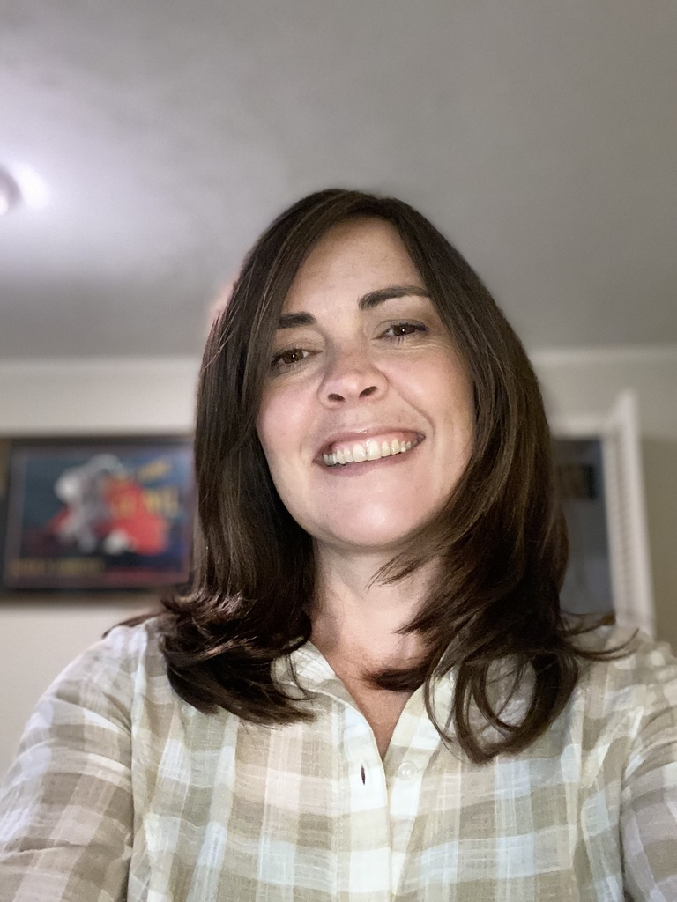

|  |
A. E. MangorEducator I am a certified Montessori teacher with experience as an administrative assistant, and a curriculum developer. I am comfortable and effective in the classroom, working with parents, developing programs and collaborating with other teachers. |
| Dates | Work |
| 2014-2016 | Georgia Aquarium - Enviornmental Educator |
| 2013-2014 | Georgia Aqurium - Guest Educator |
| 2007-2011 | White Flint Children's House - Lead Montessori Teacher |
| 2007-2010 | White Flint Children's House - Administrative Assistant |
| 2005-2007 | Franklin Montessori - Assistant Teacher/Intern |
| Dates | Work |
| 2018-2020 | Dyssegård Bibliotek - Hellerup, Denmark |
| 2017-2018 | International Rescue Commitee - Atlanta, GA |
| 2011-2014 | Little Creek Farm Conservancy - Decatur, GA |
| 2011-2014 | Stride Ahead, Theraputic Horseback Riding - Decatur, GA |
| Classroom Management | ★★★★ |
| Curriculum Development | ★★★ |
| Student Engagment | ★★★★★ |
| Classroom Preparation | ★★★★★ |
| Leadership | ★★★★ |
| Parent Communication | ★★★★ |